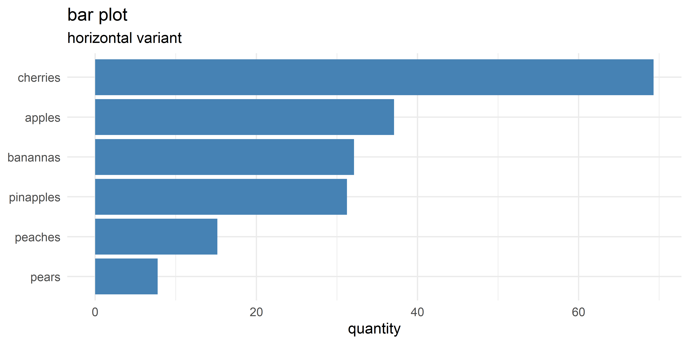
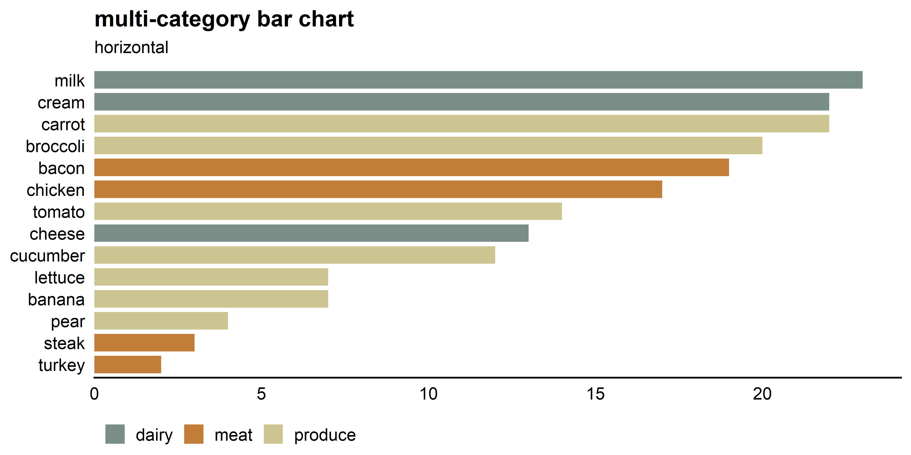

5 Quantities
5.1 bar chart
# create dummy categorical data
categorical_data <-
tibble(fruit = c("apples", "pears", "banannas", "pinapples", "cherries", "peaches"),
quantity = runif(6, 5, 70)) %>%
# for categorical graphs its often useful to make the category a factor. This lets
# you control the order by which it appears on the plot. Below we use fct_reorder
# from the forcats package to reorder the fruit variable by the quantity of fruit.
mutate(fruit = forcats::fct_reorder(fruit, quantity))
# barchart
# ggplot is the first command for any ggplot2 plot. data and aestetics aes()
# can be defined here or in any individual geom_*(function)
ggplot(data = categorical_data, aes(x = fruit, y = quantity)) +
# geom_bar takes a quantity from a "tidy" dataset, here we just have one
# category-value pair so we use geom_col instead
geom_col(fill = "steelblue", color = NA) +
# themes change the overall look of the plot. these can also be modified
# further if need be (also can use packaged themes like theme_economist)
theme_minimal() +
# coord_flip flips the x and y axis which is useful for making bar charts
# with lots of values. Omit to make normal bar chart
coord_flip() +
xlab(NULL)+
# title the plot, can also have a subtitle
ggtitle(label = "bar plot",
subtitle = "horizontal variant")

Figure 5.1: Bar chart of dummy fruit data
# create a randomish set of categorical data
multi_categorical_data <-
bind_rows(
tibble(
type = "meat",
food = c("steak", "bacon", "chicken", "turkey"),
quantity = (runif(4, 1, 25) %>% round(0))),
tibble(type = "dairy",
food = c("cheese", "milk", "cream"),
quantity =(runif(3, 1, 25) %>% round(0))),
tibble(type = "produce",
food = c("tomato", "lettuce", "carrot", "broccoli", "cucumber", "banana", "pear"),
quantity =(runif(7, 1, 25) %>% round(0)))
) %>%
# for categorical graphs its often useful to make the category a factor. This lets
# you control the order by which it appears on the plot. Below we use fct_reorder
# from the forcats package to reorder the fruit variable by the quantity of fruit.
mutate(food = forcats::fct_reorder(food, quantity))
# barchart
# ggplot is the first command for any ggplot2 plot. data and aestetics aes()
# can be defined here or in any individual geom_*(function)
multi_categorical_data %>%
ggplot(aes(x = food, y = quantity)) +
# geom_bar takes a quantity from a "tidy" dataset, here we just have one
# category-value pair so we use geom_col instead.
# Fill is set to type so that each type gets a different color.
# Set color to NA to remove border from bars.
geom_col(aes(fill = type), color = NA, width = 0.8) +
# use the wesanderson package (based on movie schemes) to add moonrise2 palette
# to graph. The wes_palette() function returns a vector of color values which
# is then applied to scale_fill_manual
scale_fill_manual(values = wes_palette("Moonrise2", n = 3)) +
# no x label
xlab(NULL) +
# modify the y scale so that it doesnt expand and so that the limits of
# the scale extend 5% past the upper limit of the data which is sometimes useful
# if you have labels for the data or want to give the graph extra "breathing room"
scale_y_continuous(
name = NULL,
expand = c(0, 0),
limits = c(0, max(multi_categorical_data$quantity) * 1.05),
breaks = pretty_breaks(6)) +
# This graph uses theme_cowplot and then is modified using the theme() function
# to remove the y axis line and ticks as well as moving the legend position and
# removing its title.
theme_cowplot(font_size = 11) +
theme(axis.line.y = element_blank(),
axis.ticks = element_blank(),
legend.title = element_blank(),
legend.position = "bottom") +
# coord_flip flips the x and y axis which is useful for making bar charts
# with lots of values. Omit to make normal bar chart
coord_flip() +
# title the plot, can also have a subtitle
ggtitle(label = "multi-category bar chart",
subtitle = "horizontal")

Figure 5.2: Bar chart of food quanity separated by food type